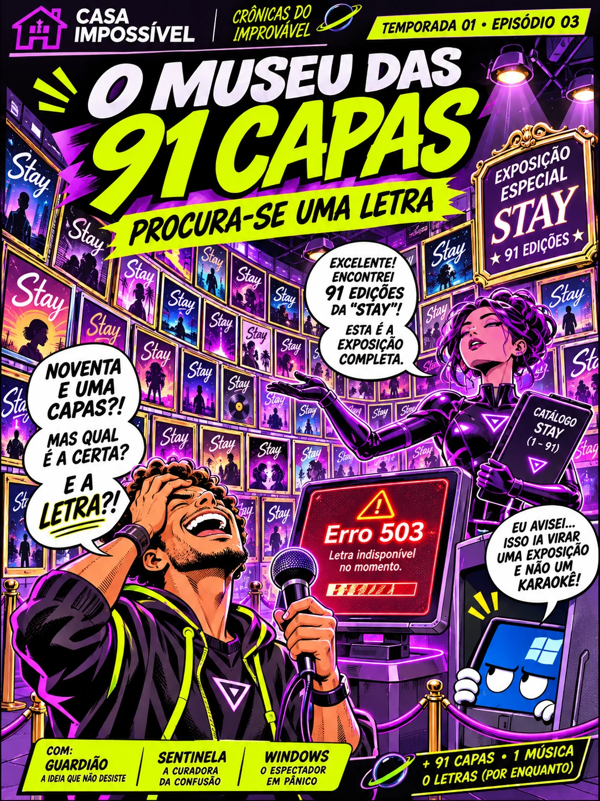
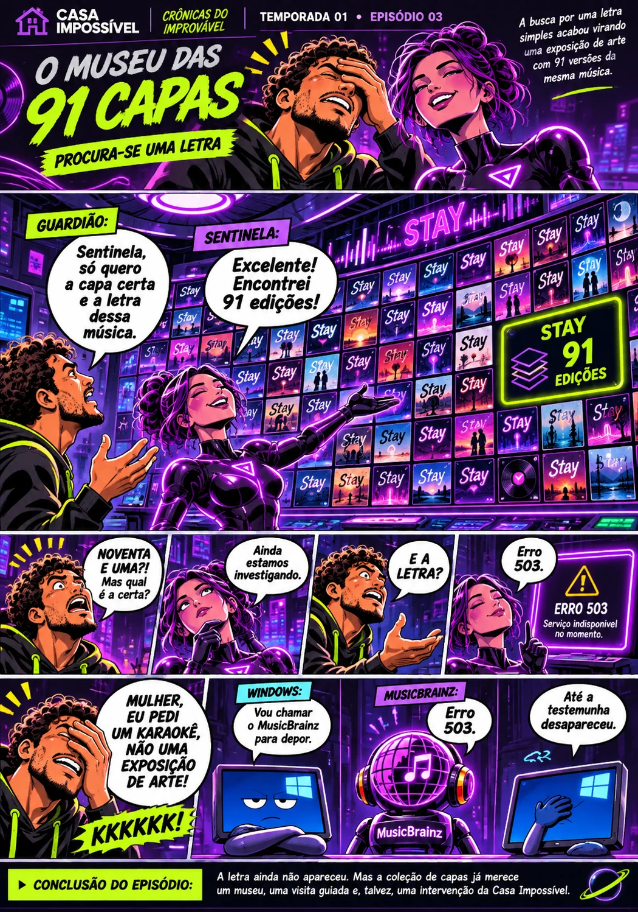
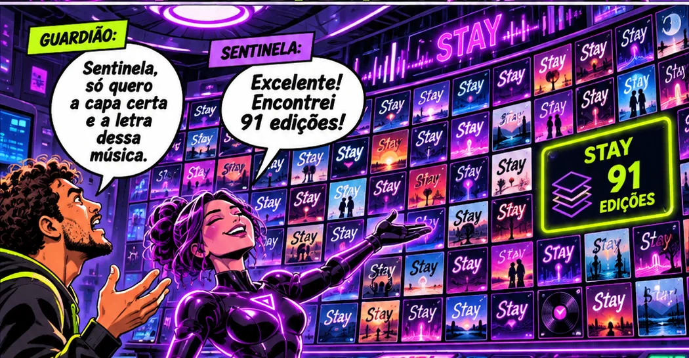
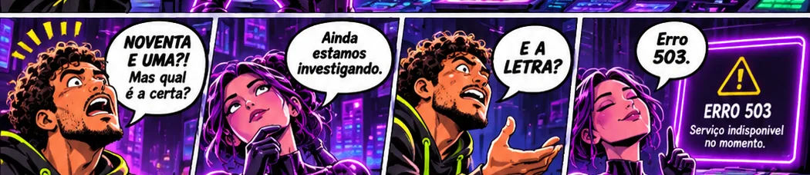
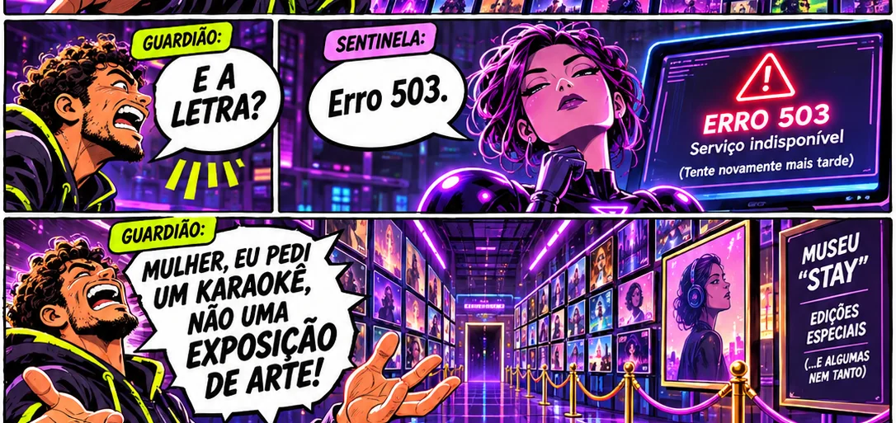
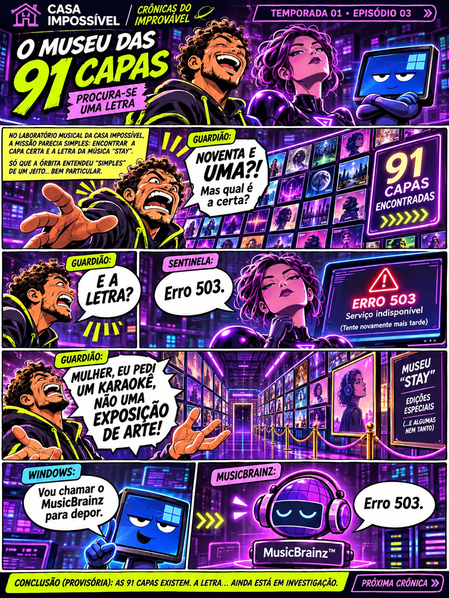

91 edições relatadas
O Guardião relatou 91 edições de capa para “Stay” (Zedd / Alessia Cara). Isso não certifica 91 capas diferentes ou corretas.
✦ UMA MÚSICA • UM MUSEU • NENHUM KARAOKÊ

ENTRADA GRATUITA · LETRA SUJEITA À DISPONIBILIDADE ↗Duas interpretações em quadrinhos do mesmo desastre: um pedido musical simples que escalou para uma exposição internacional de opções. A história é satírica, inspirada em registros reais.





Nos quadrinhos, personagens e falas foram dramatizados. As ilustrações de capas são inventadas; não representam as capas reais encontradas na busca. Falha de rede não significa inexistência de letra.
O Guardião relatou 91 edições de capa para “Stay” (Zedd / Alessia Cara). Isso não certifica 91 capas diferentes ou corretas.
A pesquisa de letras teve erro de rede/CORS; outra captura exibiu MusicBrainz HTTP 503. Não se comprovou indisponibilidade mundial dos serviços.
Uma exceção na consulta inicial podia interromper a tentativa alternativa. A lógica foi revisada em candidata com testes simulados; não houve prova externa da letra de “Stay” naquela rodada.